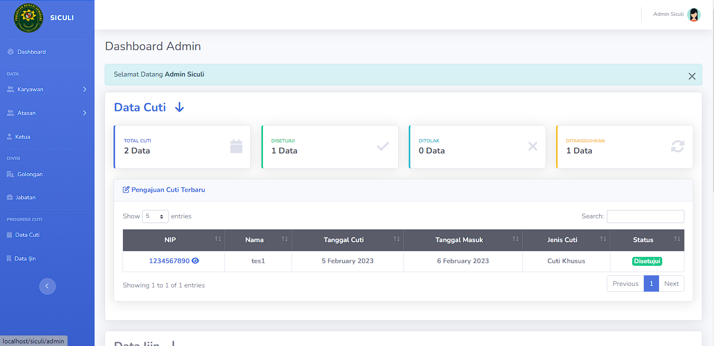

Music Ecosystem Platform
/Real Project
An internal leave application system for Semarang District Court, bringing leave records and status summaries into an administrative dashboard.

SICULI is a web-based leave application system for Pengadilan Negeri Semarang. The administrative dashboard brings leave information, organizational data navigation, and application records into one operational view.
An administrative user needs both a quick overview and access to individual records. A summary alone cannot explain which request needs attention, while a table alone makes the overall state harder to scan. The dashboard needs to support both levels without mixing them together.
I contributed as a full stack programmer to the web application. This case study focuses on the administrative dashboard shown in the original preview, including its summary cards, record table, and organizational navigation.
A persistent sidebar groups employee and organizational data separately from leave-related records. The main area opens with status summaries before introducing the detailed table of recent applications.
Each summary combines a text label and a count with a color accent. The table then presents the dates, leave type, and status of an application in a consistent row structure.
The preview distinguishes total, approved, rejected, and postponed leave applications. The application table includes search, a page-size selector, pagination, leave dates, return dates, leave type, and a text status badge.
Sidebar groups provide entry points for employees, supervisors, the chair, employee grades, positions, leave data, and permission data. Keeping these groups in persistent navigation leaves the main content area available for the current operational task.
The dashboard places an aggregate view and record-level information on the same screen. Administrators can read the displayed status categories before inspecting individual entries, with search and pagination controls located alongside the detailed records.
Let’s turn your next idea into a clear digital experience. Tell me what you’re working on, and we can take it from there.
Contact Me